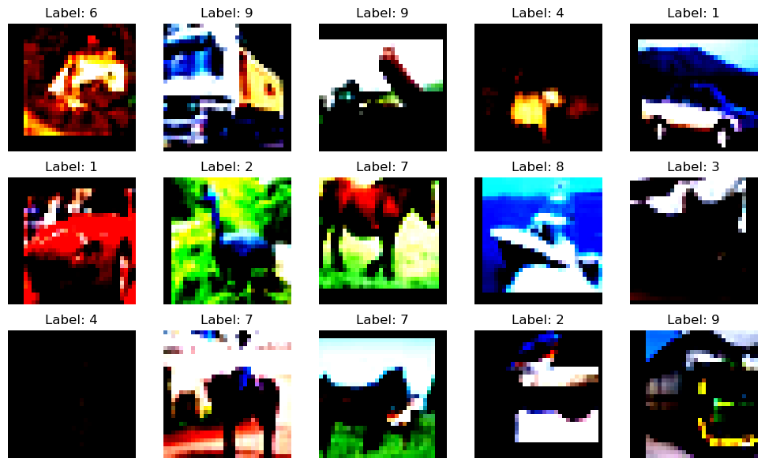
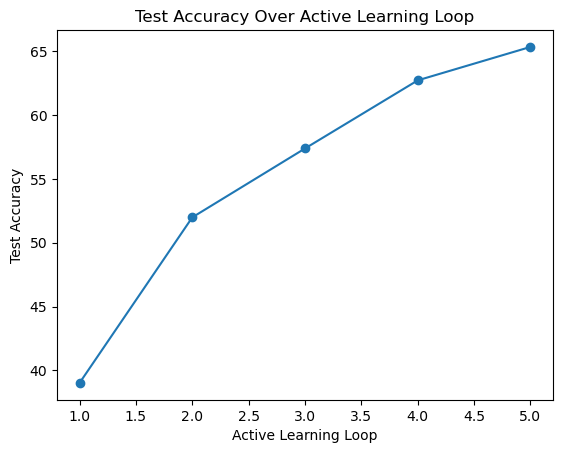
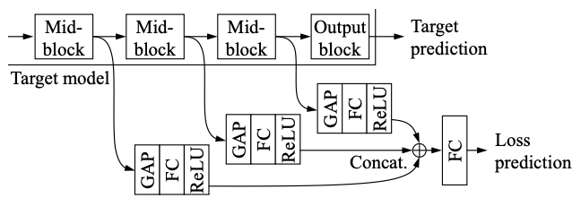
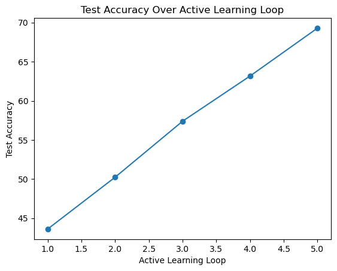

import torch
import random
import numpy as np
import torch.nn as nn
from tqdm import tqdm
import matplotlib.pyplot as plt
import torch.optim as optim
import torch.nn.functional as F
from torch.utils.data import DataLoader
import torch.optim.lr_scheduler as lr_scheduler
from torch.utils.data.sampler import SubsetRandomSampler
# Torchvison
import torchvision.transforms as T
from torchvision.datasets import CIFAR10Why Active Learning?
- Experimental result of semi-supervised learning suggests that higher portion of annotated data ensures better performance.
- But, annotation is expensive and time-consuming. Thus, limiting the budget.
- Active learning is a solution to this problem as it selects data points that are most informative and asks for annotation of these data points only.
What is Active Learning?
- Model actively selects data points that the model is uncertain about. Using the selected data points, the model is retrained.
- Eg: In a classification task, the model selects data points that are close to the decision boundary. Later, the model is retrained using the selected data points.
- Lets’ demonstrate this using CIFAR-10 example.
import os
os.environ["TF_XLA_FLAGS"] = "--tf_xla_enable_xla_devices" ## setting the environment
os.environ["CUDA_DEVICE_ORDER"] = "PCI_BUS_ID"
os.environ["CUDA_VISIBLE_DEVICES"] = "1" ## using GPU core 1Model Architecture
class BasicBlock(nn.Module):
expansion = 1
def __init__(self, in_planes, planes, stride=1):
super(BasicBlock, self).__init__()
self.conv1 = nn.Conv2d(in_planes, planes, kernel_size=3, stride=stride, padding=1, bias=False)
self.bn1 = nn.BatchNorm2d(planes)
self.conv2 = nn.Conv2d(planes, planes, kernel_size=3, stride=1, padding=1, bias=False)
self.bn2 = nn.BatchNorm2d(planes)
self.shortcut = nn.Sequential()
if stride != 1 or in_planes != self.expansion*planes:
self.shortcut = nn.Sequential(
nn.Conv2d(in_planes, self.expansion*planes, kernel_size=1, stride=stride, bias=False),
nn.BatchNorm2d(self.expansion*planes)
)
def forward(self, x):
out = F.relu(self.bn1(self.conv1(x)))
out = self.bn2(self.conv2(out))
out += self.shortcut(x)
out = F.relu(out)
return outclass ResNet(nn.Module):
def __init__(self, block, num_blocks, num_classes=10):
super(ResNet, self).__init__()
self.in_planes = 64
self.conv1 = nn.Conv2d(3, 64, kernel_size=3, stride=1, padding=1, bias=False)
self.bn1 = nn.BatchNorm2d(64)
self.layer1 = self._make_layer(block, 64, num_blocks[0], stride=1)
self.layer2 = self._make_layer(block, 128, num_blocks[1], stride=2)
self.layer3 = self._make_layer(block, 256, num_blocks[2], stride=2)
self.layer4 = self._make_layer(block, 512, num_blocks[3], stride=2)
self.linear = nn.Linear(512*block.expansion, num_classes)
def _make_layer(self, block, planes, num_blocks, stride):
strides = [stride] + [1]*(num_blocks-1)
layers = []
for stride in strides:
layers.append(block(self.in_planes, planes, stride))
self.in_planes = planes * block.expansion
return nn.Sequential(*layers)
def forward(self, x):
out = F.relu(self.bn1(self.conv1(x)))
out1 = self.layer1(out)
out2 = self.layer2(out1)
out3 = self.layer3(out2)
out4 = self.layer4(out3)
out = F.avg_pool2d(out4, 4)
out = out.view(out.size(0), -1)
out = self.linear(out)
return out, [out1, out2, out3, out4]def ResNet18(num_classes = 10):
return ResNet(BasicBlock, [2,2,2,2], num_classes)Data Transformation (CIFAR-10)
train_transform = T.Compose([
T.RandomHorizontalFlip(),
T.RandomCrop(size=32, padding=4),
T.ToTensor(),
T.Normalize([0.4914, 0.4822, 0.4465], [0.2023, 0.1994, 0.2010])
])
test_transform = T.Compose([
T.ToTensor(),
T.Normalize([0.4914, 0.4822, 0.4465], [0.2023, 0.1994, 0.2010])
])cifar10_train = CIFAR10('../cifar10', train=True, download=True, transform=train_transform)
cifar10_unlabeled = CIFAR10('../cifar10', train=True, download=True, transform=test_transform)
cifar10_test = CIFAR10('../cifar10', train=False, download=True, transform=test_transform)Files already downloaded and verified
Files already downloaded and verified
Files already downloaded and verifiedclass SubsetSequentialSampler(torch.utils.data.Sampler):
def __init__(self, indices):
self.indices = indices
def __iter__(self):
return (self.indices[i] for i in range(len(self.indices)))
def __len__(self):
return len(self.indices)Visualising the dataset
# plot some sample images from the dataset
fig, axes = plt.subplots(nrows=3, ncols=5, figsize=(10, 6))
for i, ax in enumerate(axes.flat):
img, label = cifar10_train[i]
img = np.clip(img.permute(1, 2, 0), 0, 1) # clip the input image for the valid range for imshow
ax.imshow(img)
ax.set_title(f"Label: {label}")
ax.axis('off')
plt.tight_layout()
plt.show()
# cifar_10_labels = {0: 'airplane', 1: 'automobile', 2: 'bird', 3: 'cat', 4: 'deer',
# 5: 'dog', 6: 'frog', 7: 'horse', 8: 'ship', 9: 'truck'}
Training & Testing function
def train(model, criterion, optimizer, dataloaders, num_epochs, scheduler):
model.train()
train_accuracy = []
for epoch in range(num_epochs):
scheduler.step()
train_total = 0
train_correct = 0
for data in tqdm(dataloaders['train'], leave=False, total=len(dataloaders['train'])):
inputs = data[0].cuda()
labels = data[1].cuda()
optimizer.zero_grad()
scores, features = model(inputs)
target_loss = criterion(scores, labels)
_, preds = torch.max(scores.data, 1)
train_total += labels.size(0)
train_correct += (preds == labels).sum().item()
loss = torch.sum(target_loss) / target_loss.size(0)
loss.backward()
optimizer.step()
train_acc = 100* train_correct / train_total
train_accuracy.append(train_acc)
# Evaluating test loss
total = 0
correct = 0
model.eval()
for data in dataloaders['test']:
inputs = data[0].cuda()
labels = data[1].cuda()
scores, features = model(inputs)
_, preds = torch.max(scores.data, 1)
total += labels.size(0)
correct += (preds == labels).sum().item()
test_acc = 100* correct / total
return train_accuracy, test_accUsing Entropy as the acquisition function for active learning
def entropy(model, unlabeled_loader):
model.eval()
entropies = []
with torch.no_grad():
for data in unlabeled_loader:
inputs = data[0].cuda()
scores, _ = model(inputs)
entropy = -torch.sum(F.softmax(scores, dim=1) * F.log_softmax(scores, dim=1), dim=1)
entropies.append(entropy.cpu().numpy())
return np.concatenate(entropies)## CONFIG
NUM_TRAIN = 50000
BATCH = 128
ADDENDUM = 1000
SUBSET = 10000
MOMENTUM = 0.9
WDECAY = 5e-4
LR = 0.01
CYCLES = 5
MILESTONES = [160]
EPOCH = 40Active Learning Loop
indices = list(range(NUM_TRAIN))
random.shuffle(indices)
labeled_set = indices[:ADDENDUM]
unlabeled_set = indices[ADDENDUM:]
test_accuracy_list = []
train_accuracy_list = []
train_loader = DataLoader(cifar10_train, batch_size=BATCH, sampler=SubsetRandomSampler(labeled_set), pin_memory=True)
test_loader = DataLoader(cifar10_test, batch_size=BATCH)
dataloaders = {'train': train_loader, 'test': test_loader}
# Model
resnet18 = ResNet18(num_classes=10).cuda()
torch.backends.cudnn.benchmark = False
# Active learning cycles
for cycle in range(CYCLES):
criterion = nn.CrossEntropyLoss(reduction='none')
optimizer = optim.SGD(resnet18.parameters(), lr=LR, momentum=MOMENTUM, weight_decay=WDECAY)
scheduler = lr_scheduler.MultiStepLR(optimizer, milestones=MILESTONES)
# Training and test
train_acc, test_acc = train(resnet18, criterion, optimizer, dataloaders, EPOCH, scheduler)
test_accuracy_list.append(test_acc)
train_accuracy_list.append(train_acc)
print('Cycle {}/{} || Label set size {}: Test Accuracy {} '.format(cycle+1, CYCLES, len(labeled_set), test_acc))
random.shuffle(unlabeled_set)
subset = unlabeled_set[:SUBSET]
# Create unlabeled dataloader for the unlabeled subset
unlabeled_loader = DataLoader(cifar10_unlabeled, batch_size=BATCH, sampler=SubsetSequentialSampler(subset), pin_memory=True)
# Measure uncertainty of each data points in the subset
uncertainty = entropy(resnet18, unlabeled_loader)
# Index in ascending order
arg = np.argsort(uncertainty)
# Update the labeled dataset and the unlabeled dataset, respectively
labeled_set += list(torch.tensor(subset)[arg][-ADDENDUM:].numpy())
unlabeled_set = list(torch.tensor(subset)[arg][:-ADDENDUM].numpy()) + unlabeled_set[SUBSET:]
# Create a new dataloader for the updated labeled dataset
dataloaders['train'] = DataLoader(cifar10_train, batch_size=BATCH, sampler=SubsetRandomSampler(labeled_set),
pin_memory=True)/home/project_3/anaconda3/envs/gan/lib/python3.10/site-packages/torch/optim/lr_scheduler.py:139: UserWarning: Detected call of `lr_scheduler.step()` before `optimizer.step()`. In PyTorch 1.1.0 and later, you should call them in the opposite order: `optimizer.step()` before `lr_scheduler.step()`. Failure to do this will result in PyTorch skipping the first value of the learning rate schedule. See more details at https://pytorch.org/docs/stable/optim.html#how-to-adjust-learning-rate
warnings.warn("Detected call of `lr_scheduler.step()` before `optimizer.step()`. "
Cycle 1/5 || Label set size 1000: Test Accuracy 39.01
Cycle 2/5 || Label set size 2000: Test Accuracy 51.99
Cycle 3/5 || Label set size 3000: Test Accuracy 57.39
Cycle 4/5 || Label set size 4000: Test Accuracy 62.73
Cycle 5/5 || Label set size 5000: Test Accuracy 65.35 active_learning_loop = [1, 2, 3, 4, 5] # Active learning loop numbers
plt.plot(active_learning_loop, test_accuracy_list, marker='o', linestyle='-')
plt.xlabel('Active Learning Loop')
plt.ylabel('Test Accuracy')
plt.title('Test Accuracy Over Active Learning Loop')
plt.show()
Learning to Loss Active Learning
- In this active learning a loss prediction module is attached to the target network to predict the loss.
- This module is then used to suggest the data that the target module is likely to produce a wrong prediction on.
Loss for the loss prediction network
\[\begin{array}{r} L_{\text {loss }}\left(\hat{l p}, l^p\right)= \max \left(0,-\mathbb{1}\left(l_i, l_j\right) \cdot\left(\hat{l_i}-\hat{l_j}\right)+\xi\right) \text { s.t. } \mathbb{1}\left(l_i, l_j\right)= \begin{cases}+1, & \text { if } l_i>l_j \\ -1, & \text { otherwise }\end{cases} \end{array}\]We learn the loss prediction module by considering the difference between a pair of loss predictions, which completely make the loss prediction module discard the overall scale changes
def LossPredLoss(input, target, margin=1.0):
assert len(input) % 2 == 0, 'the batch size is not even.'
assert input.shape == input.flip(0).shape
input = (input - input.flip(0))[:len(input)//2] # [l_1 - l_2B, l_2 - l_2B-1, ... , l_B - l_B+1], where batch_size = 2B
target = (target - target.flip(0))[:len(target)//2]
target = target.detach()
one = 2 * torch.sign(torch.clamp(target, min=0)) - 1 # 1 operation which is defined by the authors
loss = torch.sum(torch.clamp(margin - one * input, min=0))
loss = loss / input.size(0) # Note that the size of input is already halved
return lossLossNet
LossNet takes in as input the output from the intermediate layer of the target network to predict the loss.

image.png
class LossNet(nn.Module):
def __init__(self, feature_sizes=[32, 16, 8, 4], num_channels=[64, 128, 256, 512], interm_dim=128):
super(LossNet, self).__init__()
self.GAP1 = nn.AvgPool2d(feature_sizes[0])
self.GAP2 = nn.AvgPool2d(feature_sizes[1])
self.GAP3 = nn.AvgPool2d(feature_sizes[2])
self.GAP4 = nn.AvgPool2d(feature_sizes[3])
self.FC1 = nn.Linear(num_channels[0], interm_dim)
self.FC2 = nn.Linear(num_channels[1], interm_dim)
self.FC3 = nn.Linear(num_channels[2], interm_dim)
self.FC4 = nn.Linear(num_channels[3], interm_dim)
self.linear = nn.Linear(4 * interm_dim, 1)
def forward(self, features):
out1 = self.GAP1(features[0])
out1 = out1.view(out1.size(0), -1)
out1 = F.relu(self.FC1(out1))
out2 = self.GAP2(features[1])
out2 = out2.view(out2.size(0), -1)
out2 = F.relu(self.FC2(out2))
out3 = self.GAP3(features[2])
out3 = out3.view(out3.size(0), -1)
out3 = F.relu(self.FC3(out3))
out4 = self.GAP4(features[3])
out4 = out4.view(out4.size(0), -1)
out4 = F.relu(self.FC4(out4))
out = self.linear(torch.cat((out1, out2, out3, out4), 1))
return out# Function for evaluating the test accuracy
def test(models, dataloaders, mode='val'):
assert mode == 'val' or mode == 'test'
models['backbone'].eval()
models['module'].eval()
total = 0
correct = 0
with torch.no_grad():
for (inputs, labels) in dataloaders[mode]:
inputs = inputs.cuda()
labels = labels.cuda()
scores, _ = models['backbone'](inputs)
_, preds = torch.max(scores.data, 1)
total += labels.size(0)
correct += (preds == labels).sum().item()
return 100 * correct / total# Training function for both the target model and the loss prediction module
def train(models, criterion, optimizers, schedulers, dataloaders, num_epochs, epoch_loss):
for epoch in range(num_epochs):
schedulers['backbone'].step()
schedulers['module'].step()
models['backbone'].train()
models['module'].train()
for data in tqdm(dataloaders['train'], leave=False, total=len(dataloaders['train'])):
inputs = data[0].cuda()
labels = data[1].cuda()
optimizers['backbone'].zero_grad()
optimizers['module'].zero_grad()
scores, features = models['backbone'](inputs)
target_loss = criterion(scores, labels)
# After 120 epochs, stop the gradient from the loss prediction module propagated to the target model.
if epoch > epoch_loss:
features[0] = features[0].detach()
features[1] = features[1].detach()
features[2] = features[2].detach()
features[3] = features[3].detach()
pred_loss = models['module'](features)
pred_loss = pred_loss.view(pred_loss.size(0))
# Combined loss function
m_backbone_loss = torch.sum(target_loss) / target_loss.size(0)
m_module_loss = LossPredLoss(pred_loss, target_loss, margin=MARGIN)
loss = m_backbone_loss + WEIGHT * m_module_loss
loss.backward()
optimizers['backbone'].step()
optimizers['module'].step()# Selecting the acquisition points based on the predictions of the loss prediction module
def get_uncertainty(models, unlabeled_loader):
models['backbone'].eval()
models['module'].eval()
uncertainty = torch.tensor([]).cuda()
with torch.no_grad():
for (inputs, labels) in unlabeled_loader:
inputs = inputs.cuda()
scores, features = models['backbone'](inputs)
pred_loss = models['module'](features)
pred_loss = pred_loss.view(pred_loss.size(0))
uncertainty = torch.cat((uncertainty, pred_loss), 0)
return uncertainty.cpu()EPOCHL = 120 # After EPOCHL, stop the gradient from the loss prediction module propagated to the target model.
MARGIN = 1.0
WEIGHT = 1.0indices = list(range(NUM_TRAIN))
random.shuffle(indices)
labeled_set = indices[:ADDENDUM]
unlabeled_set = indices[ADDENDUM:]
test_accuracy_lal = []
train_loader = DataLoader(cifar10_train, batch_size=BATCH, sampler=SubsetRandomSampler(labeled_set), pin_memory=True)
test_loader = DataLoader(cifar10_test, batch_size=BATCH)
dataloaders = {'train': train_loader, 'test': test_loader}
# Model
resnet18 = ResNet18(num_classes=10).cuda()
loss_module = LossNet().cuda()
models = {'backbone': resnet18, 'module': loss_module}
torch.backends.cudnn.benchmark = False
# Active learning cycles
for cycle in range(CYCLES):
# Loss, criterion and scheduler (re)initialization
criterion = nn.CrossEntropyLoss(reduction='none')
optim_backbone = optim.SGD(models['backbone'].parameters(), lr=LR,
momentum=MOMENTUM, weight_decay=WDECAY)
optim_module = optim.SGD(models['module'].parameters(), lr=LR,
momentum=MOMENTUM, weight_decay=WDECAY)
sched_backbone = lr_scheduler.MultiStepLR(optim_backbone, milestones=MILESTONES)
sched_module = lr_scheduler.MultiStepLR(optim_module, milestones=MILESTONES)
optimizers = {'backbone': optim_backbone, 'module': optim_module}
schedulers = {'backbone': sched_backbone, 'module': sched_module}
# Training and test
train(models, criterion, optimizers, schedulers, dataloaders, EPOCH, EPOCHL)
acc = test(models, dataloaders, mode='test')
test_accuracy_lal.append(acc)
print('Cycle {}/{} || Label set size {}: Test acc {}'.format(cycle+1, CYCLES, len(labeled_set), acc))
# Randomly sample 10000 unlabeled data points
random.shuffle(unlabeled_set)
subset = unlabeled_set[:SUBSET]
# Create unlabeled dataloader for the unlabeled subset
unlabeled_loader = DataLoader(cifar10_unlabeled, batch_size=BATCH, sampler=SubsetSequentialSampler(subset), pin_memory=True)
# Measure uncertainty of each data points in the subset
uncertainty = get_uncertainty(models, unlabeled_loader)
# Index in ascending order
arg = np.argsort(uncertainty)
# Update the labeled dataset and the unlabeled dataset, respectively
labeled_set += list(torch.tensor(subset)[arg][-ADDENDUM:].numpy())
unlabeled_set = list(torch.tensor(subset)[arg][:-ADDENDUM].numpy()) + unlabeled_set[SUBSET:]
# Create a new dataloader for the updated labeled dataset
dataloaders['train'] = DataLoader(cifar10_train, batch_size=BATCH, sampler=SubsetRandomSampler(labeled_set), pin_memory=True) 0%| | 0/8 [00:00<?, ?it/s] Cycle 1/5 || Label set size 1000: Test acc 43.6
Cycle 2/5 || Label set size 2000: Test acc 50.23
Cycle 3/5 || Label set size 3000: Test acc 57.39
Cycle 4/5 || Label set size 4000: Test acc 63.17
Cycle 5/5 || Label set size 5000: Test acc 69.3active_learning_loop = [1, 2, 3, 4, 5] # Active learning loop numbers
plt.plot(active_learning_loop, test_accuracy_lal, marker='o', linestyle='-')
plt.xlabel('Active Learning Loop')
plt.ylabel('Test Accuracy')
plt.title('Test Accuracy Over Active Learning Loop')
plt.show()
References:
- https://arxiv.org/pdf/1905.03677.pdf
- https://github.com/Mephisto405/Learning-Loss-for-Active-Learning